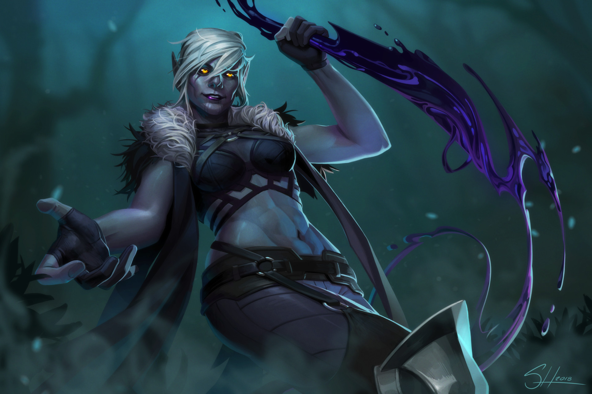

Zamenis Saulyd
Personnage¶
Race : Drow
Classe : Investigateur
Niveau : 1 (BM +2)
Points de vie : 11
Vitesse : 30 ft.
| FOR | DEX | CON | INT | SAG | CHA |
|---|---|---|---|---|---|
| 20 (+5) | 12 (+1) | 16 (+3) | 16 (+3) | 16 (+3) | 4 (-3) |
| ◎ +5 | ◉ +3 | ◎ +3 | ◉ +5 | ◎ +3 | ◎ -3 |
| Compétences | |
|---|---|
| ◎ Acrobaties (Dex) : +1 | ⬤ Investigation (Int) : +7 |
| ◉ Arcanes (Int) : +5 | ◎ Médecine (Sag) : +3 |
| ⬤ Athlétisme (For) : +9 | ◎ Nature (Int) : +3 |
| ◎ Discrétion (Dex) : +1 | ◉ Perception (Sag) : +5 |
| ◎ Dressage (Sag) : +3 | ◎ Persuasion (Cha) : -3 |
| ◉ Escamotage (Dex) : +3 | ◎ Religion (Int) : +3 |
| ◎ Histoire (Int) : +3 | ◎ Représentation (Cha) : -3 |
| ◎ Intimidation (Cha) : -3 | ◎ Survie (Sag) : +3 |
| ◉ Intuition (Sag) : +5 | ◎ Tromperie (Cha) : -3 |
Fiche récapitulative pour ceux qui ont la flemme (Merci Gemini !)
Vous êtes Zamenis, une Drow érudite et anormalement forte, exilée de votre société matriarcale après avoir résolu une crise surnaturelle par la logique et la force brute, prouvant ainsi que les méthodes "grossières" sont parfois les plus efficaces.
Objectif pour la session :
Le monde de la surface est un immense livre ouvert. Votre but est de survivre, d'étudier les menaces occultes locales pour enrichir votre grimoire, et de prouver, avant tout à vous-même, que votre liberté et vos méthodes sont supérieures à l'intrigue et au poison de votre ancien monde.
Parlez comme un Rapport d'Autopsie : Votre voix est un monotone factuel. Vous ne bavardez pas, vous communiquez des données. Utilisez des mots courts et précis ("Incorrect", "Possible"). Votre franchise est brutale, car la diplomatie est une perte de temps.
La Force comme Solution : Vous avez une Force de 20. Servez-vous-en. Face à un obstacle, votre premier réflexe n'est pas la finesse, mais la puissance. Une porte est fermée ? Enfoncez-la. Un PNJ est récalcitrant ? Utilisez l'Intimidation basée sur votre Force. Vous résolvez les problèmes de manière directe et définitive.
Le Grimoire est votre Bouclier Social : Vous êtes socialement inapte. Utilisez votre grimoire comme un refuge. Quand une conversation devient trop "émotionnelle" ou inutile, ouvrez-le et consultez vos notes. C'est votre façon de dire "Cette interaction est terminée". Votre véritable dialogue est avec le savoir, pas avec les gens.
Maîtrises¶
Armure : Armures Légères
Armes : Armes Simples, Arbalète de Poing, Arbalète Lourde, Épée Longue, Rapière, Épée Courte
Outils : Set de Dé, Kit d'Empoisonneur
Langues : Commun, Elfique, Profond
Description¶
Âge : 114 ans
Taille : 1,70 m
Poids : 77 kg
Zamenis a la silhouette et les traits indubitables d'une elfe noire, mais quelque chose en elle contredit immédiatement les stéréotypes de sa race. Là où l'on s'attendrait à voir une silhouette svelte et gracieuse, on trouve une carrure robuste et une musculature dense, presque surprenante. Elle n'est pas taillée pour l'escrime agile et les ballets mortels, mais pour la force brute et l'endurance. Ses épaules sont larges, et ses bras, habitués à manier des armes lourdes et à maîtriser des créatures récalcitrantes, sont puissants.
Sa peau a la couleur de l'obsidienne polie, un noir profond qui absorbe la lumière. Ses cheveux, d'un blanc pur comme le veut son héritage Drow, ne sont pas coiffés en tresses complexes et ornées comme ceux des nobles de sa cité. Elle les porte coupés à la garçonne pour ne pas être gênée dans son travail.
Son visage est anguleux et ses traits sont fins, mais ils sont dénués de la séduction ou de l'arrogance habituelles de son peuple. Son expression est neutre, presque impassible. Ses yeux, d'un orange infernal, ne cherchent pas à charmer ou à intimider par la ruse ; ils sont perçants, analytiques et scrutent le monde avec une intensité déconcertante, comme s'ils cherchaient constamment un indice, une faiblesse, une faille dans la réalité.
Elle ne porte pas les robes de soie et les pièces d'armure en mitral ciselé de sa société. Sa tenue est purement fonctionnelle : une armure de cuir sombre, robuste et bien entretenue, mais portant les cicatrices de nombreuses rencontres. Des renforts de métal protègent ses avant-bras et ses épaules. À sa ceinture pendent plusieurs sacoches contenant des composants de rituels, des fioles, et un ou deux poignards.
Mais son bien le plus important, toujours à portée de main dans une sacoche de cuir à son flanc, est son lourd grimoire. Sa couverture est usée par des milliers de consultations, ses pages remplies de son écriture précise et anguleuse. C'est cet objet, plus que son épée, qui est le véritable symbole de sa puissance. Zamenis est une force de la nature, un esprit brillant dans le corps d'une briseuse de boucliers.

Aptitudes¶
Aptitudes de Race¶
Vision dans le noir. Habitué à la vie dans de denses forêts et au ciel nocturne, vous avez une vision supérieure dans l'obscurité et la lumière faible. Vous pouvez voir à 120 ft. (36m/24 cases) dans une zone de lumière faible comme vous verriez avec une lumière vive, et dans le noir comme avec une lumière faible. Vous ne pouvez pas discerner les couleurs dans l'obscurité, seulement les nuances de gris.
Ascendance Féérique. Vous avez l'avantage aux jets de sauvegarde contre les effets de charme et la magie ne peut pas vous endormir.
Transe. Les elfes n'ont pas besoin de dormir. Au lieu de cela, ils méditent profondément, restant à demi conscients, 4 heures par jour (le mot usuel pour désigner cette méditation est « transe »). En méditant, vous pouvez rêver, tant bien que mal ; ces rêves sont en fait des exercices mentaux qui deviennent un réflexe après des années de pratique. Après un repos de ce type, vous obtenez les mêmes avantages qu'un humain après 8 heures de sommeil.
Magie Drow. Vous connaissez le cantrip Lumières Dansantes.
Aptitudes de Classe¶
Ritualiste¶
Vous éditez un grimoire rempli de rituels magiques : votre outil le plus efficace pour se défaire des menaces surnaturelles. Votre grimoire contient les sorts :
Votre caractéristique d'incantation est l'Intelligence.
Équipement¶
- Une armure de cuir
- Une dague et une épée longue
- Une arbalète lourde et 20 carreaux
- Un Sac d'Exploration Souterraine
- Un grimoire et une sacoche à composants
- Un Kit d'Empoisonneur
- Un bijou drow d'une valeur de 10 Pièces d'Or
- 5 Pièces d'Or
Historique¶
La société des elfes noirs est un ballet mortel, une symphonie de murmures, de trahisons et de lames fines dansant dans l'obscurité. Zamenis Saulyd, elle, a toujours été une note discordante. Née dans une maison noble de second rang, elle était une anomalie. Là où ses sœurs apprenaient l'art subtil du poison, Zamenis développait une force physique déconcertante. Ses mains, au lieu d'être agiles, étaient puissantes. Elle était incapable de saisir les subtilités d'un mensonge, et sa franchise brutale était une source constante d'embarras pour sa famille.
Rejetée, elle a trouvé refuge dans la solitude des archives de sa maison. Loin des intrigues, elle s'est plongée dans des textes que les autres jugeaient ennuyeux : l'anatomie des créatures de l'Outreterre, les rapports de patrouille, les traités sur les faiblesses des fiélons et des morts-vivants. La connaissance était sa seule alliée.
La tragédie qui scella son destin ne fut pas une invasion, mais une hantise. Un esprit malveillant, un Dybbuk, commença à tourmenter les couloirs de la maison Saulyd. Cet esprit, un fiélon mineur, s'amusait à posséder les corps des serviteurs et des gardes récemment décédés, les faisant marcher, parler d'une voix obscène, et commettre des actes de sabotage avant de les abandonner, flasques.
La panique s'installa. Les méthodes Drows étaient inutiles. On ne pouvait pas assassiner une cible qui changeait de corps chaque nuit. Les prêtresses de Lolth tentèrent des rituels de bannissement, mais le Dybbuk était malin et se cachait, leur influence ne parvenant pas à le déloger. La suspicion grandit, chaque noble accusant ses rivaux d'être derrière cette "magie".
Pendant ce temps, Zamenis observait et étudiait. Elle nota les schémas, les heures des possessions, les mots utilisés par l'esprit. Dans les archives, elle trouva une vieille tablette décrivant les Dybbuks et, surtout, le rituel précis pour en piéger un. Le rituel demandait une préparation minutieuse et, au moment crucial, que le corps hôte soit maintenu immobile.
Armée de son grimoire dans lequel elle avait recopié le rituel, et d'une lourde chaîne de fer, Zamenis attendit son heure. Lorsque le Dybbuk posséda le cadavre d'un garde particulièrement robuste, elle intervint. Tandis que l'esprit la raillait à travers la bouche du mort, Zamenis ne tenta pas de le combattre. Elle utilisa sa force brute pour maîtriser le corps, l'enchaînant à un pilier de pierre malgré sa résistance surnaturelle. Une fois le corps immobilisé, elle commença à tracer les runes du rituel au sol et à psalmodier les paroles de liaison. Le Dybbuk, piégé, hurla de rage avant d'être arraché du cadavre et emprisonné dans une gemme qu'elle avait préparée.
Elle avait réussi. Mais elle n'avait pas suivi le protocole. Elle n'avait pas demandé la permission de la Matrone, ni l'aide des prêtresses. Elle avait utilisé un savoir interdit et une force "grossière" pour résoudre un problème spirituel. Elle avait mis en lumière l'inefficacité de ses supérieures.
Pour cet exploit, et pour la faire taire, elle fut "récompensée". On loua publiquement son "zèle non conventionnel" et on lui offrit "l'honneur" d'être la première de sa maison à explorer le monde de la surface. C'était un exil déguisé en mission, une condamnation à mort sous des applaudissements polis.
Pour Zamenis, cependant, ce fut une confirmation. Ses méthodes, son savoir et sa force étaient efficaces. Le monde de la surface, avec ses propres monstres et ses mystères, n'est qu'une nouvelle archive à étudier, un nouveau problème à résoudre. Elle part, non pas comme une victime, mais comme une investigatrice qui a prouvé sa valeur et qui est maintenant libre de pratiquer son art sans le jugement de ceux qu'elle a laissés derrière elle.
Aptitude d'Historique¶
Zamenis est capable de canaliser sa puissance physique pour surmonter les obstacles de manière directe et efficace. Elle bénéficie des effets suivants :
- Vous pouvez utiliser votre modificateur de Force à la place de votre modificateur de Charisme lorsque vous faites un jet d'Intimidation. Votre présence physique et votre force évidente sont vos principaux outils de persuasion.
- Vos attaques avec une arme infligent le double de dégâts aux objets et aux structures (comme les portes, les murs ou les coffres).
Traits de Personnalité¶
Traits : Je commence et termine mes journées par des rituels qui ne sont familiers à ceux autour de moi. Je ne peux m'empêcher de me questionner sur comment les choses et les personnes fonctionnent.
Idéal : Tout est nouveau, mais j'ai soif de connaissances.
Lien : Ma liberté est la plus importante de mes possessions, et je ne laisserai personne me la voler.
Défaut : J'ai une faiblesse pour les habitants du monde de la surface.
Alignement : Neutre
Conseils de Jeu¶
Sa voix est un alto, basse et généralement dénuée d'émotion. Elle ne cherche pas à plaire ou à impressionner. Elle énonce des faits. Qu'elle décrive une recette de ragoût ou la méthode pour décapiter un vampire, le ton est exactement le même : neutre et informatif. Elle ne participe pas aux bavardages. Si elle n'a pas de données à recueillir ou à communiquer, elle est silencieuse. Elle peut répondre à une longue question par un simple mot : "Incorrect.", "Possible.", "Non pertinent.".
Son grimoire est son objet de réconfort. Dans une situation sociale inconfortable (comme une fête ou une conversation trop longue), elle va l'ouvrir et faire semblant de consulter ses notes, créant une barrière entre elle et les autres. Quand un plan est discuté, elle reste silencieuse, son regard passant d'un interlocuteur à l'autre. Elle ne donne son avis qu'à la toute fin, souvent pour pointer une faille logique que personne n'avait vue. Elle peut interrompre une conversation pour examiner de plus près une tache étrange sur le mur. Elle peut aussi quitter une discussion sans un mot une fois qu'elle a obtenu l'information qu'elle cherchait, considérant l'échange comme "terminé".
Ses mains sont fortes, habituées à la garde d'une épée ou à retenir une créature. Quand elle doit manipuler un objet petit ou fragile (une fiole de potion, une clé), elle le fait avec une lenteur et une concentration exagérées, comme si elle avait peur de le pulvériser par inadvertance.